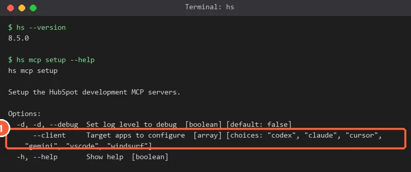
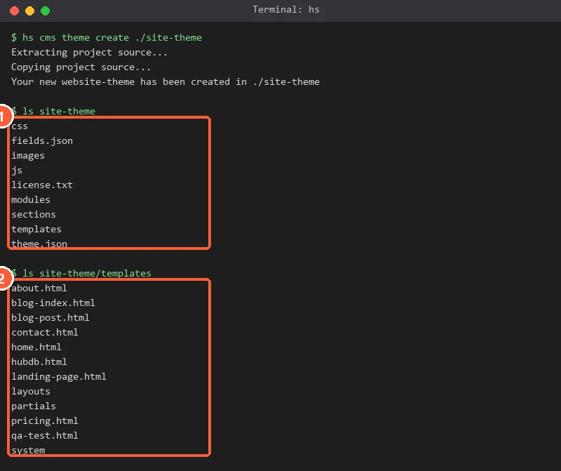
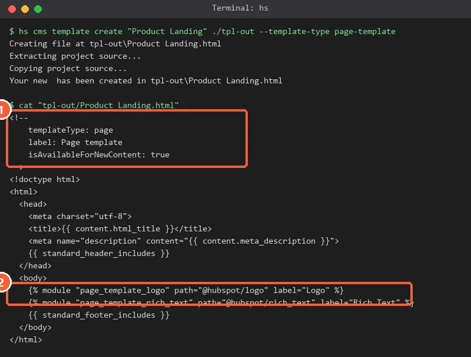
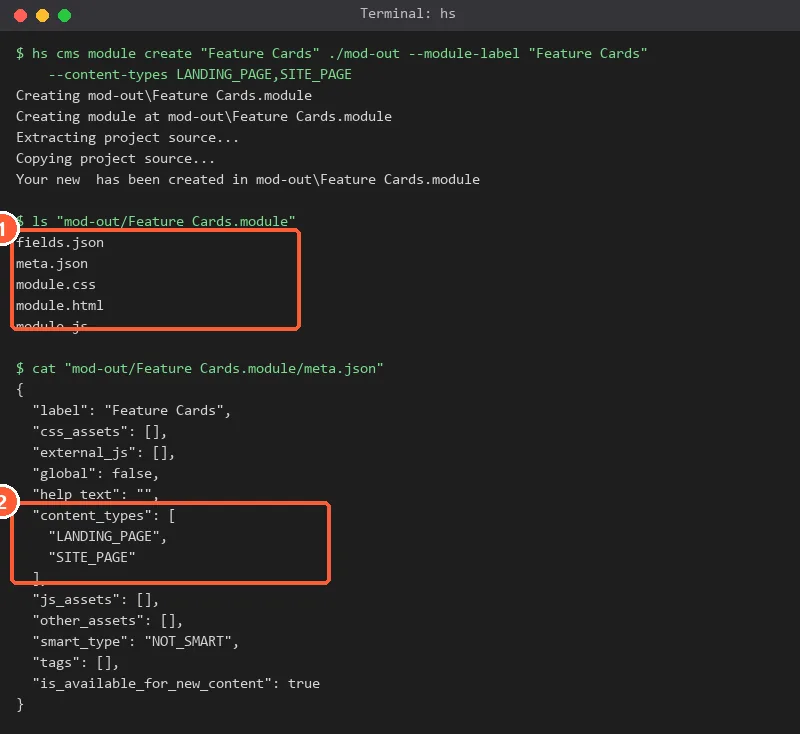
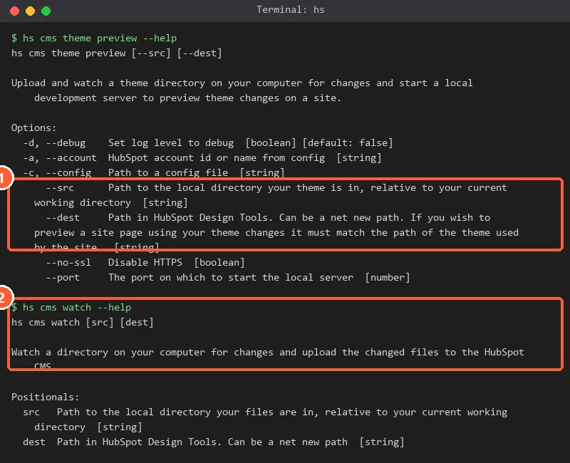
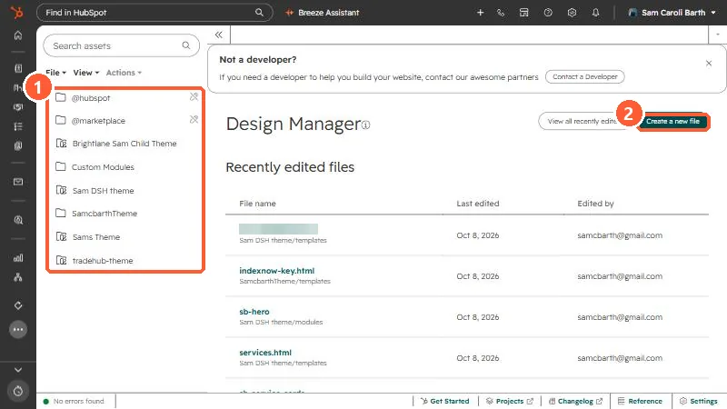

Short answer
Install the HubSpot CLI (version 8.2.0 or higher), run hs mcp setup, pick Claude, restart Claude Code and check /mcp for the HubSpotDev server. Its CMS tools create templates, modules and serverless functions, and the CLI scaffolds a full theme with hs cms theme create. Upload with hs cms upload or hs cms watch, use a draft publish mode while you test, and review the result in Design Manager.
1. Install the CLI and the Developer MCP server
HubSpot's developer MCP server runs locally and gives your AI assistant tools for app and CMS development. It needs version 8.2.0 or higher of the HubSpot CLI.
hs --version
npm install -g @hubspot/cli
hs mcp setupWhen prompted, use the arrow keys and space bar to choose your client, then press Enter. Supported clients include Claude Code, Codex CLI, Cursor, Gemini CLI, VS Code and Windsurf. You will also be asked whether to use standalone mode, which runs npx @hubspot/cli instead of a global install, useful on machines where global npm installs are restricted. Restart the client if it was open.


My CLI is version 8.5.0. Its help for hs mcp setup has a --client option with the choices codex, claude, cursor, gemini, vscode and windsurf, so the setup can be run for Claude directly.
To check it worked, run /mcp in Claude Code and look for HubSpotDev. This server is separate from the remote HubSpot MCP server that the Claude connector uses. The developer server is local and for building. The remote one is for working with CRM data.
2. What the CMS tools do
HubSpot's tool reference lists CMS tools that run CLI commands for the agent.
- create-cms-template: creates a template. Types include page, email, partial, global partial, blog listing, blog post, search and section.
- create-cms-module: creates a HubL or React module, with content type targeting, a global flag and a new-content availability flag.
- create-cms-function: creates a serverless function with an endpoint path and HTTP method.
- search-docs and fetch-doc: let the agent read HubSpot's developer docs before it writes code.
HubSpot's example prompt for a website module tells the agent to ask what the module should look and do, what fields you want to control, and where it will be used, then to use brand colors by default and walk you through testing.
3. Scaffold a theme
The CLI can scaffold a complete theme. On my machine, hs cms theme create ./site-theme made a folder with css, fields.json, images, js, modules, sections, templates and theme.json.


The scaffold's theme.json on my machine points to a preview path, a screenshot path and a single mobile responsive breakpoint. The templates folder had home, about, contact, landing-page, pricing, blog and other starting templates.
The theme folder from this command did not include a CLAUDE.md or AGENTS.md. HubSpot says it automatically includes agent context files, AGENTS.md, CLAUDE.md and HUBSPOT_PROJECTS.md, in projects created through hs project create, hs get-started or the MCP server. For a theme folder, add your own CLAUDE.md with your brand rules and the commands you want the agent to use.
4. Add a template
Templates are HTML files with a comment header. A new page template from hs cms template create had templateType: page, a label, and isAvailableForNewContent: true, plus two example modules and the standard header and footer includes.


HubSpot's docs list hs cms template create, while some of their command lists still show the older hs create template. In CLI 8.5.0 on my machine, hs create answered with a hint to use the hs cms ... create form, so use that if your agent follows an older doc. If a coded template does not show up where you expect in the page picker, see coded template missing from the picker.
5. Add a module
hs cms module create takes a label and the content types where the module can be used. It asked whether the module should be available for new content, then wrote fields.json, meta.json, module.css, module.html and module.js.


Fields are what editors control, so tell Claude which settings a marketer should be able to change. The upload validation errors for fields and themes are covered in theme upload validation errors.
6. Preview and upload safely
The CLI has two ways to push files: hs cms upload <src> <dest> for a one-time upload and hs cms watch <src> <dest> to upload changes as you save. Both accept --cms-publish-mode with draft or publish, and hs cms theme preview uploads and watches a theme and starts a local preview server.


- Start with a draft publish mode, and look at the result in Design Manager before anything is published.
hs cms upload --cleandeletes the destination directory and its contents before uploading, and that includes the global content for global partials and modules.hs cms watch --removedeletes files in HubSpot that are not found locally.- HubSpot's tool notes for project uploads say to run them only when you explicitly ask. Say the same in your prompt for CMS uploads.
- Use a copy of the theme or a new destination path while you experiment.
7. Check it in Design Manager
Open Development > Design Manager. Uploaded themes appear in the file tree, and you can open any template or module to inspect it.


My Design Manager tree lists several themes and a Custom Modules folder, so a new upload path should be different from any of those. I would upload to a fresh folder first, check it, then decide whether it replaces anything.